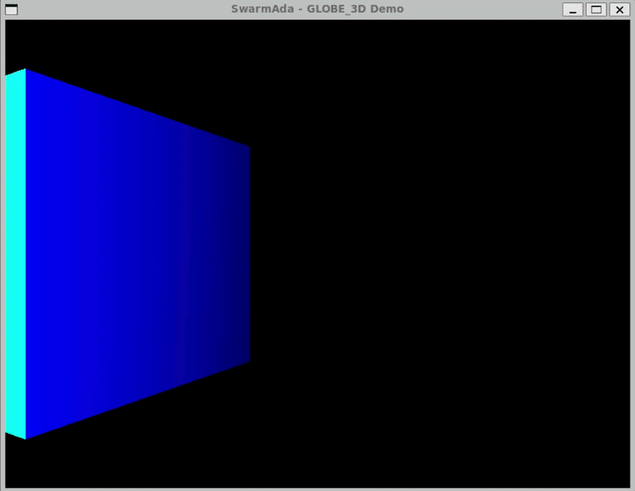

Real-time 3D drone swarm simulation
SwarmAda combines the robustness and performance of Ada with the flexibility of Lua scripting — rendered in real time with GLOBE_3D. Define swarm behaviors without ever touching the core engine.

Live demo — object position & rotation driven every frame by a Lua script.
A proof-of-concept for multi‑agent systems
SwarmAda is a real-time 3D swarm simulation framework built to explore how a statically-typed, memory-safe systems language can drive high-performance rendering and physics, while a lightweight scripting layer stays free to iterate on behaviors.
- Ada as the core engine for 3D rendering and physics
- A clean API exposed to Lua for real-time object control
- Ada's safety combined with Lua's agility for swarm behaviors
- Configurable behaviors without ever recompiling the engine
60+ FPS
Real-time object updates
2
Languages, one engine
OpenGL
Rendering via GLOBE_3D
GPLv3
Free & open source
Everything you need to prototype a swarm
3D Rendering
Powered by GLOBE_3D, an OpenGL-based engine, for real-time visualization of the simulation.
Lua Scripting
Define drone behaviors in Lua with full control — no recompilation required.
Real-time Control
Objects are updated at 60+ FPS via direct function calls into the Lua VM.
Lightweight
Minimal dependencies. Runs on Linux, including WSL2 with an X server.
Extensible
Adding a new Ada function to the Lua API takes three small, well-documented steps.
Educational
A clean, small codebase — ideal for learning Ada/Lua interop and multi-agent design.
Three layers, one clean boundary
Lua scripts never touch the engine directly — everything flows through a small, explicit bridge.
Lua Scripts
- • Behavior definitions
- • Swarm algorithms (Boids, formations)
- • Custom object control logic
Lua Bridge
- • Ada functions exposed to Lua
- • Script loading and execution
- • Function reference management
- • Error handling
Ada Core Engine
- • GLOBE_3D rendering engine
- • GLUT window management
- • Object management (3D models)
- • Camera control
- • Lighting system
How it works
Register_Function
(State, "set_position",
Set_Position_Wrapper'Access);
Register_Function
(State, "set_rotation",
Set_Rotation_Wrapper'Access);
Register_Function
(State, "get_position",
Get_Position_Wrapper'Access);local angle = 0
function update(dt)
angle = angle + dt * 0.5
local x = math.cos(angle) * 2.0
local z = math.sin(angle) * 2.0
set_position(x, 0.0, z)
set_rotation(0.0, angle*10, 0.0)
end
return updateprocedure Update
(Delta_Time : Float) is
begin
if Update_Ref /= 0 then
Push_Value (State, Update_Ref);
Push (State,
Lua_Float (Delta_Time));
PCall (State, 1, 0, 0);
end if;
end Update;Up and running in six steps
Tested on Ubuntu 22.04+ and WSL2. See the README for full troubleshooting.
-
1
Install system dependencies
sudo apt update sudo apt install -y libgl1-mesa-dev libglu1-mesa-dev freeglut3-dev \ libx11-dev libxi-dev libxrandr-dev libxinerama-dev \ libxcursor-dev liblua5.3-dev -
2
Install Alire (Ada package manager)
wget https://github.com/alire-project/alire/releases/download/v2.0.2/alr-2.0.2-bin-x86_64-linux.zip unzip alr-2.0.2-bin-x86_64-linux.zip sudo mv bin/alr /usr/local/bin/ -
3
Clone & build GLOBE_3D
cd ~/ git clone https://github.com/zertovitch/globe-3d.git cd globe-3d export G3D_OS=linux gprbuild -P globe_3d.gprGLOBE_3D isn't published on Alire — it must be built manually and pinned as a local dependency.
-
4
Clone SwarmAda
git clone https://github.com/angyxys/swarmada.git cd swarmada -
5
Pin the GLOBE_3D dependency
alr with --use ../globe-3d globe_3dOr edit
alire.tomlmanually — see the README for the exact[[pins]]block. -
6
Build & run
alr clean alr build ./bin/swarmadaOn WSL, run an X server (e.g. VcXsrv) and export
DISPLAYbeforehand.
Where SwarmAda is headed
From a single scripted cube to full swarm algorithms and tooling.
Basic 3D rendering with GLOBE_3D
Shipped
Lua integration with Ada
Shipped
Real-time object control via Lua
Shipped
Multiple objects (drones)
Planned
Swarm algorithms (Boids)
Planned
Keyboard / mouse controls
Planned
GUI for configuration
Planned
Save / load swarm configurations
Planned
Performance optimization
Planned
Contributions are welcome
Fork the repo, open an issue to discuss ideas, or submit a pull request. For major changes, please open an issue first.